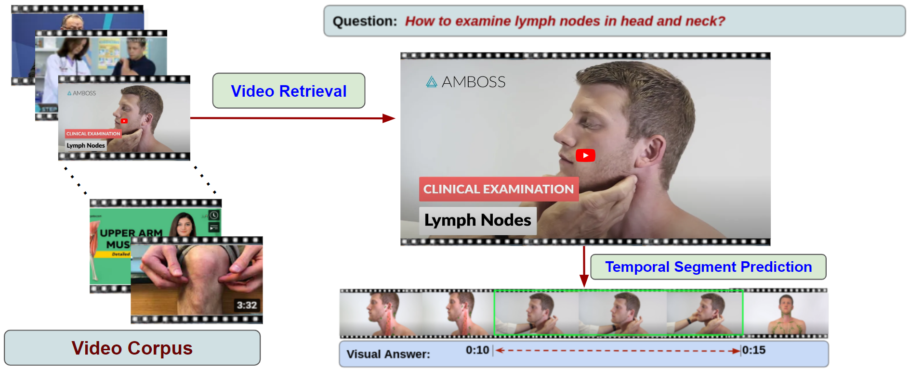
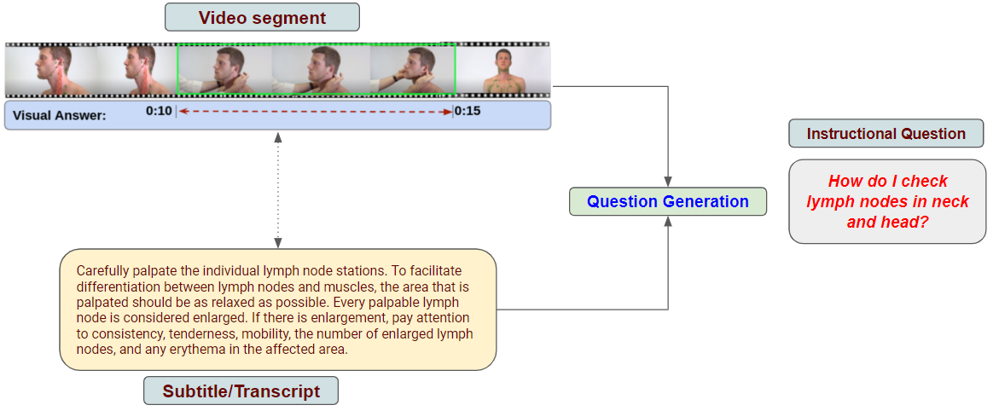

Introduction
The recent surge in the availability of online videos has changed the way of acquiring information and knowledge. Many people prefer instructional videos to teach or learn how to accomplish a particular task with a series of step-by-step procedures in an effective and efficient manner. In a similar way, medical instructional videos are more suitable and beneficial for delivering key information through visual and verbal communication to consumers' healthcare questions that demand instruction. With an aim to provide visual instructional answers to consumers' first aid, medical emergency, and medical educational questions, this TRECVID task on medical video question answering will introduce a new challenge to foster research toward designing systems that can understand medical videos to provide visual answers to natural language questions and equipped with the multimodal capability to generate instructional questions from the medical video. Following the success of the 1st MedVidQA shared task in the BioNLP workshop at ACL 2022, MedVidQA 2023 at TRECVID expanded the tasks and introduced a new track considering language-video understanding and generation. This track is comprised of two main tasks Video Corpus Visual Answer Localization (VCVAL) and Medical Instructional Question Generation (MIQG).
News
- February 15, 2023: Introducing the MedVidQA 2023 challenge.
Important Dates
- First call for participation: February 15, 2023
- Release of the training and validation datasets: April 30, 2023
- Release of the video corpus: May 12, 2023
- Release of the test sets: July 14, 2023
- Run submission deadline: August 4, 2023
- Release of the official results: September 29, 2023
Registration and Submission
- The participants can register and submit the runs through CodaLab. The link to the CodaLab page will be available soon.
Tasks
-
Task 1: Video Corpus Visual Answer Localization (VCVAL)
Given a medical query and a collection of videos, the task aims to retrieve the appropriate video from the video collection and then locate the temporal segments (start and end timestamps) in the video where the answer to the medical query is being shown, or the explanation is illustrated in the video.

Schematic workflow of the video corpus visual answer localization task. -
Task 2: Medical Instructional Question Generation (MIQG)
Given a video segment and its subtitle, the task is to generate the instructional question for which the given video segment is the visual answer. This task comes under multimodal generation, where the system has to consider the video (visual) and subtitle (language) modalities to generate the natural language question.

Schematic workflow of the medical instructional question generation task.
Datasets
-
VCVAL Dataset
-
Training Dataset:
- MedVidQA collections [1] consisting of 3,010 human-annotated instructional questions and visual answers from 900 health-related videos.
- An automatically created HealthVidQA dataset consists of ~50 000 instructional questions and visual answers from 15,000 health-related videos.
- Validation Dataset: The validation dataset contains 50 questions and their answer timestamps created from 25 medical instructional videos.
- Test Dataset: The test dataset contains 50 questions and their answer timestamps created from 25 medical instructional videos.
-
Training Dataset:
-
MIQG Dataset
- Training Dataset: The training dataset consists of 2710 question and visual segments, which are formulated from 800 medical instructional videos from MedVidQA collections [1].
- Validation Dataset: The validation dataset contains 145 questions and answers timestamps created from 49 medical instructional videos.
- Test Dataset: The test dataset contains 100 questions and answers timestamps created from 45 medical instructional videos.
Evaluation Metrics
-
VCVAL Evaluation
- Video retrieval
- Expect a minimum of 1 and a maximum of 1000 videos.
- We will create a set of relevant videos from the pool of top-20 highest-rated videos and perform the post hoc evalaution based on pooling [2][3].
- Temporal segment prediction
- First, we will create relevant temporal segments from the top-5 judged relevant videos. Additionally, we will add a few more temporal segments from top-10 judged relevant videos.
- A model prediction is considered correct if:
- the predicted video matches one of the judged relevance videos, and
- the predicted temporal segment overlaps with the judged temporal segments
- Intersection over Union (IoU) metric similar to MVAL task [4].
- Mean IoU of the n-retrieved segments from n videos.
-
MIQG Evaluation
Organizers
 Dina Demner-Fushman
NLM, NIH
Dina Demner-Fushman
NLM, NIH